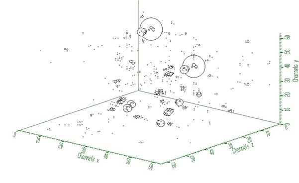
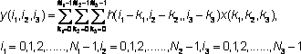
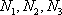
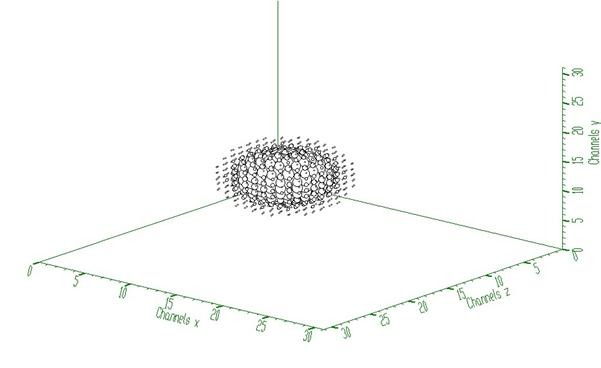
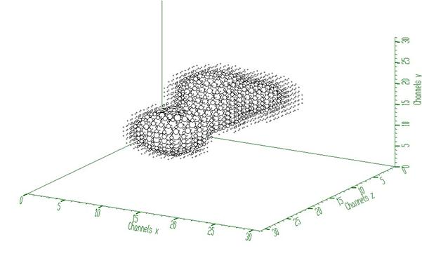
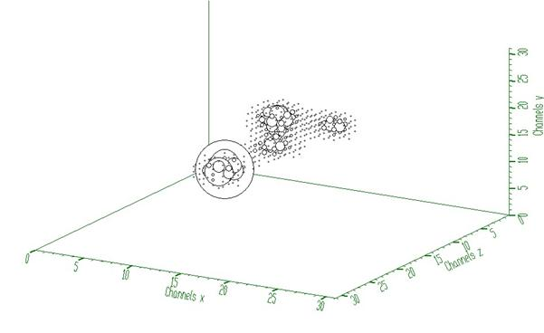
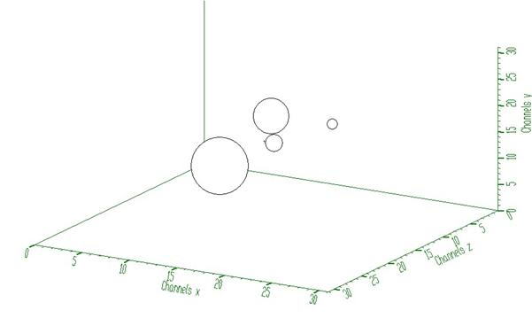
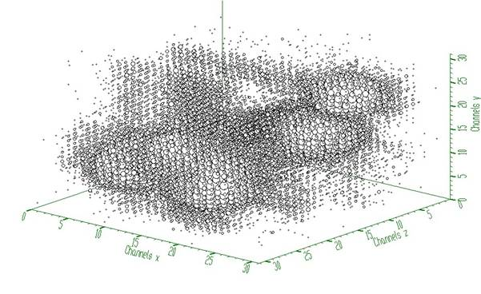
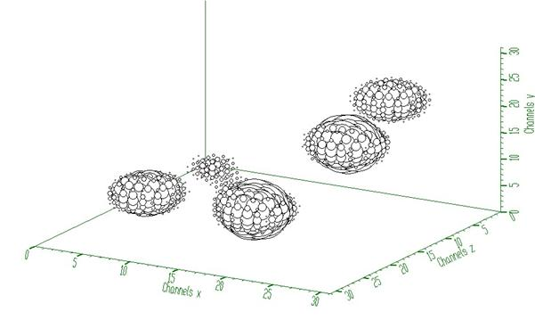

class TSpectrum3: public TNamed
THIS CLASS CONTAINS ADVANCED SPECTRA PROCESSING FUNCTIONS. THREE-DIMENSIONAL BACKGROUND ESTIMATION FUNCTIONS THREE-DIMENSIONAL SMOOTHING FUNCTIONS THREE-DIMENSIONAL DECONVOLUTION FUNCTIONS THREE-DIMENSIONAL PEAK SEARCH FUNCTIONS These functions were written by: Miroslav Morhac Institute of Physics Slovak Academy of Sciences Dubravska cesta 9, 842 28 BRATISLAVA SLOVAKIA email:fyzimiro@savba.sk, fax:+421 7 54772479 The original code in C has been repackaged as a C++ class by R.Brun The algorithms in this class have been published in the following references: [1] M.Morhac et al.: Background elimination methods for multidimensional coincidence gamma-ray spectra. Nuclear Instruments and Methods in Physics Research A 401 (1997) 113- 132. [2] M.Morhac et al.: Efficient one- and two-dimensional Gold deconvolution and its application to gamma-ray spectra decomposition. Nuclear Instruments and Methods in Physics Research A 401 (1997) 385-408. [3] M. Morhac et al.: Efficient algorithm of multidimensional deconvolution and its application to nuclear data processing. Digital Signal Processing, Vol. 13, No. 1, (2003), 144-171. [4] M.Morhac et al.: Identification of peaks in multidimensional coincidence gamma-ray spectra. Nuclear Instruments and Methods in Research Physics A 443(2000), 108-125. These NIM papers are also available as Postscript files from: ftp://root.cern.ch/root/SpectrumDec.ps.gz ftp://root.cern.ch/root/SpectrumSrc.ps.gz ftp://root.cern.ch/root/SpectrumBck.ps.gz
Function Members (Methods)
| TSpectrum3() | |
| TSpectrum3(const TSpectrum3&) | |
| TSpectrum3(Int_t maxpositions, Float_t resolution = 1) | |
| virtual | ~TSpectrum3() |
| void | TObject::AbstractMethod(const char* method) const |
| virtual void | TObject::AppendPad(Option_t* option = "") |
| virtual const char* | Background(const TH1* hist, int niter, Option_t* option = "goff") |
| const char* | Background(float*** spectrum, Int_t ssizex, Int_t ssizey, Int_t ssizez, Int_t numberIterationsX, Int_t numberIterationsY, Int_t numberIterationsZ, Int_t direction, Int_t filterType) |
| virtual void | TObject::Browse(TBrowser* b) |
| static TClass* | Class() |
| virtual const char* | TObject::ClassName() const |
| virtual void | TNamed::Clear(Option_t* option = "") |
| virtual TObject* | TNamed::Clone(const char* newname = "") const |
| virtual Int_t | TNamed::Compare(const TObject* obj) const |
| virtual void | TNamed::Copy(TObject& named) const |
| const char* | Deconvolution(float*** source, const float*** resp, Int_t ssizex, Int_t ssizey, Int_t ssizez, Int_t numberIterations, Int_t numberRepetitions, Double_t boost) |
| virtual void | TObject::Delete(Option_t* option = "")MENU |
| virtual Int_t | TObject::DistancetoPrimitive(Int_t px, Int_t py) |
| virtual void | TObject::Draw(Option_t* option = "") |
| virtual void | TObject::DrawClass() constMENU |
| virtual TObject* | TObject::DrawClone(Option_t* option = "") constMENU |
| virtual void | TObject::Dump() constMENU |
| virtual void | TObject::Error(const char* method, const char* msgfmt) const |
| virtual void | TObject::Execute(const char* method, const char* params, Int_t* error = 0) |
| virtual void | TObject::Execute(TMethod* method, TObjArray* params, Int_t* error = 0) |
| virtual void | TObject::ExecuteEvent(Int_t event, Int_t px, Int_t py) |
| virtual void | TObject::Fatal(const char* method, const char* msgfmt) const |
| virtual void | TNamed::FillBuffer(char*& buffer) |
| virtual TObject* | TObject::FindObject(const char* name) const |
| virtual TObject* | TObject::FindObject(const TObject* obj) const |
| virtual Option_t* | TObject::GetDrawOption() const |
| static Long_t | TObject::GetDtorOnly() |
| TH1* | GetHistogram() const |
| virtual const char* | TObject::GetIconName() const |
| virtual const char* | TNamed::GetName() const |
| Int_t | GetNPeaks() const |
| virtual char* | TObject::GetObjectInfo(Int_t px, Int_t py) const |
| static Bool_t | TObject::GetObjectStat() |
| virtual Option_t* | TObject::GetOption() const |
| Float_t* | GetPositionX() const |
| Float_t* | GetPositionY() const |
| Float_t* | GetPositionZ() const |
| virtual const char* | TNamed::GetTitle() const |
| virtual UInt_t | TObject::GetUniqueID() const |
| virtual Bool_t | TObject::HandleTimer(TTimer* timer) |
| virtual ULong_t | TNamed::Hash() const |
| virtual void | TObject::Info(const char* method, const char* msgfmt) const |
| virtual Bool_t | TObject::InheritsFrom(const char* classname) const |
| virtual Bool_t | TObject::InheritsFrom(const TClass* cl) const |
| virtual void | TObject::Inspect() constMENU |
| void | TObject::InvertBit(UInt_t f) |
| virtual TClass* | IsA() const |
| virtual Bool_t | TObject::IsEqual(const TObject* obj) const |
| virtual Bool_t | TObject::IsFolder() const |
| Bool_t | TObject::IsOnHeap() const |
| virtual Bool_t | TNamed::IsSortable() const |
| Bool_t | TObject::IsZombie() const |
| virtual void | TNamed::ls(Option_t* option = "") const |
| void | TObject::MayNotUse(const char* method) const |
| virtual Bool_t | TObject::Notify() |
| void | TObject::Obsolete(const char* method, const char* asOfVers, const char* removedFromVers) const |
| static void | TObject::operator delete(void* ptr) |
| static void | TObject::operator delete(void* ptr, void* vp) |
| static void | TObject::operator delete[](void* ptr) |
| static void | TObject::operator delete[](void* ptr, void* vp) |
| void* | TObject::operator new(size_t sz) |
| void* | TObject::operator new(size_t sz, void* vp) |
| void* | TObject::operator new[](size_t sz) |
| void* | TObject::operator new[](size_t sz, void* vp) |
| TSpectrum3& | operator=(const TSpectrum3&) |
| virtual void | TObject::Paint(Option_t* option = "") |
| virtual void | TObject::Pop() |
| virtual void | Print(Option_t* option = "") const |
| virtual Int_t | TObject::Read(const char* name) |
| virtual void | TObject::RecursiveRemove(TObject* obj) |
| void | TObject::ResetBit(UInt_t f) |
| virtual void | TObject::SaveAs(const char* filename = "", Option_t* option = "") constMENU |
| virtual void | TObject::SavePrimitive(ostream& out, Option_t* option = "") |
| virtual Int_t | Search(const TH1* hist, Double_t sigma = 2, Option_t* option = "goff", Double_t threshold = 0.05) |
| Int_t | SearchFast(const float*** source, float*** dest, Int_t ssizex, Int_t ssizey, Int_t ssizez, Double_t sigma, Double_t threshold, Bool_t markov, Int_t averWindow) |
| Int_t | SearchHighRes(const float*** source, float*** dest, Int_t ssizex, Int_t ssizey, Int_t ssizez, Double_t sigma, Double_t threshold, Bool_t backgroundRemove, Int_t deconIterations, Bool_t markov, Int_t averWindow) |
| void | TObject::SetBit(UInt_t f) |
| void | TObject::SetBit(UInt_t f, Bool_t set) |
| virtual void | TObject::SetDrawOption(Option_t* option = "")MENU |
| static void | TObject::SetDtorOnly(void* obj) |
| virtual void | TNamed::SetName(const char* name)MENU |
| virtual void | TNamed::SetNameTitle(const char* name, const char* title) |
| static void | TObject::SetObjectStat(Bool_t stat) |
| void | SetResolution(Float_t resolution = 1) |
| virtual void | TNamed::SetTitle(const char* title = "")MENU |
| virtual void | TObject::SetUniqueID(UInt_t uid) |
| virtual void | ShowMembers(TMemberInspector& insp) |
| virtual Int_t | TNamed::Sizeof() const |
| const char* | SmoothMarkov(float*** source, Int_t ssizex, Int_t ssizey, Int_t ssizez, Int_t averWindow) |
| virtual void | Streamer(TBuffer& b) |
| void | StreamerNVirtual(TBuffer& b) |
| virtual void | TObject::SysError(const char* method, const char* msgfmt) const |
| Bool_t | TObject::TestBit(UInt_t f) const |
| Int_t | TObject::TestBits(UInt_t f) const |
| virtual void | TObject::UseCurrentStyle() |
| virtual void | TObject::Warning(const char* method, const char* msgfmt) const |
| virtual Int_t | TObject::Write(const char* name = 0, Int_t option = 0, Int_t bufsize = 0) |
| virtual Int_t | TObject::Write(const char* name = 0, Int_t option = 0, Int_t bufsize = 0) const |
| virtual void | TObject::DoError(int level, const char* location, const char* fmt, va_list va) const |
| void | TObject::MakeZombie() |
Data Members
| enum { | kBackIncreasingWindow | |
| kBackDecreasingWindow | ||
| kBackSuccessiveFiltering | ||
| kBackOneStepFiltering | ||
| }; | ||
| enum TObject::EStatusBits { | kCanDelete | |
| kMustCleanup | ||
| kObjInCanvas | ||
| kIsReferenced | ||
| kHasUUID | ||
| kCannotPick | ||
| kNoContextMenu | ||
| kInvalidObject | ||
| }; | ||
| enum TObject::[unnamed] { | kIsOnHeap | |
| kNotDeleted | ||
| kZombie | ||
| kBitMask | ||
| kSingleKey | ||
| kOverwrite | ||
| kWriteDelete | ||
| }; |
| TH1* | fHistogram | resulting histogram |
| Int_t | fMaxPeaks | Maximum number of peaks to be found |
| Int_t | fNPeaks | number of peaks found |
| TString | TNamed::fName | object identifier |
| Float_t* | fPosition | [fNPeaks] array of current peak positions |
| Float_t* | fPositionX | [fNPeaks] X positions of peaks |
| Float_t* | fPositionY | [fNPeaks] Y positions of peaks |
| Float_t* | fPositionZ | [fNPeaks] Z positions of peaks |
| Float_t | fResolution | resolution of the neighboring peaks |
| TString | TNamed::fTitle | object title |
Class Charts
{kind=link}
{kind=link}
{kind=link}
{kind=link}
Function documentation
maxpositions: maximum number of peaks
resolution: determines resolution of the neighboring peaks
default value is 1 correspond to 3 sigma distance
between peaks. Higher values allow higher resolution
(smaller distance between peaks.
May be set later through SetResolution.
ONE-DIMENSIONAL BACKGROUND ESTIMATION FUNCTION This function calculates background spectrum from source in h. The result is placed in the vector pointed by spectrum pointer. Function parameters: spectrum: pointer to the vector of source spectrum size: length of spectrum and working space vectors number_of_iterations, for details we refer to manual
ONE-DIMENSIONAL PEAK SEARCH FUNCTION This function searches for peaks in source spectrum in hin The number of found peaks and their positions are written into the members fNpeaks and fPositionX. Function parameters: hin: pointer to the histogram of source spectrum sigma: sigma of searched peaks, for details we refer to manual Note that sigma is in number of bins threshold: (default=0.05) peaks with amplitude less than threshold*highest_peak are discarded. if option is not equal to "goff" (goff is the default), then a polymarker object is created and added to the list of functions of the histogram. The histogram is drawn with the specified option and the polymarker object drawn on top of the histogram. The polymarker coordinates correspond to the npeaks peaks found in the histogram. A pointer to the polymarker object can be retrieved later via: TList *functions = hin->GetListOfFunctions(); TPolyMarker *pm = (TPolyMarker*)functions->FindObject("TPolyMarker")
resolution: determines resolution of the neighboring peaks
default value is 1 correspond to 3 sigma distance
between peaks. Higher values allow higher resolution
(smaller distance between peaks.
May be set later through SetResolution.
THREE-DIMENSIONAL BACKGROUND ESTIMATION FUNCTIONS This function calculates background spectrum from source spectrum. The result is placed to the array pointed by spectrum pointer. Function parameters: spectrum-pointer to the array of source spectrum ssizex-x length of spectrum ssizey-y length of spectrum ssizez-z length of spectrum numberIterationsX-maximal x width of clipping window numberIterationsY-maximal y width of clipping window numberIterationsZ-maximal z width of clipping window for details we refer to manual direction- direction of change of clipping window - possible values=kBackIncreasingWindow kBackDecreasingWindow filterType-determines the algorithm of the filtering -possible values=kBackSuccessiveFiltering kBackOneStepFiltering
Background estimation
Goal: Separation of useful information (peaks) from useless information (background)
• method is based on Sensitive Nonlinear Iterative Peak (SNIP) clipping algorithm [1]
•
there exist two algorithms for the estimation of new value in the
channel “ ”
”
Algorithm based on Successive Comparisons
It is an extension of one-dimensional SNIP algorithm to another dimension. For details we refer to [2].
Algorithm based on One Step Filtering
The algorithm is analogous to that for 2-dimensional data. For details we refer to TSpectrum2. New value in the estimated channel is calculated as


where p = 1, 2, …, number_of_iterations.
Function:
const char* TSpectrum3::Background (float ***fSpectrum, int fSizex, int fSizey, int fSizez, int fNumberIterationsX, int fNumberIterationsY, int fNumberIterationsZ, int fDirection, int fFilterType)
This function calculates background spectrum from the source spectrum. The result is placed in the matrix pointed by fSpectrum pointer. One can also switch the direction of the change of the clipping window and to select one of the two above given algorithms. On successful completion it returns 0. On error it returns pointer to the string describing error.
Parameters:
fSpectrum-pointer to the matrix of source spectrum
fSizex, fSizey, fSizez -lengths of the spectrum matrix
fNumberIterationsX, fNumberIterationsY, fNumberIterationsZ maximal
widths of clipping window,
fDirection- direction of change of clipping window
- possible values=kBackIncreasingWindow
kBackDecreasingWindow
fFilterType-type of the clipping algorithm,
-possible values=kBack SuccessiveFiltering
kBackOneStepFiltering
References:
[1] C. G Ryan et al.: SNIP, a statistics-sensitive background treatment for the quantitative analysis of PIXE spectra in geoscience applications. NIM, B34 (1988), 396-402.
[2] M. Morháč, J. Kliman, V. Matoušek, M. Veselský, I. Turzo.: Background elimination methods for multidimensional gamma-ray spectra. NIM, A401 (1997) 113-132.
Example 1– script Back3.c :

Fig. 1 Original three-dimensional gamma-gamma-gamma-ray spectrum

Fig. 2 Background estimated from data from Fig. 1 using decreasing clipping window with widths 5, 5, 5 and algorithm based on successive comparisons. The estimate includes not only continuously changing background but also one- and two-dimensional ridges.

Fig. 3 Resulting peaks after subtraction of the estimated background (Fig. 2) from original three-dimensional gamma-gamma-gamma-ray spectrum (Fig. 1).
Script:
// Example to illustrate the background estimator (class TSpectrum3).
// To execute this example, do
// root > .x Back3.C
void Back3() {
Int_t i, j, k;
Int_t nbinsx = 64;
Int_t nbinsy = 64;
Int_t nbinsz = 64;
Int_t xmin = 0;
Int_t xmax = nbinsx;
Int_t ymin = 0;
Int_t ymax = nbinsy;
Int_t zmin = 0;
Int_t zmax = nbinsz;
float *** source = new float **[nbinsx];
float *** dest = new float **[nbinsx];
for(i=0;i<nbinsx;i++){
source[i]=new float* [nbinsy];
for(j=0;j<nbinsy;j++)
source[i][j]=new float [nbinsz];
}
for(i=0;i<nbinsx;i++){
dest[i]=new float* [nbinsy];
for(j=0;j<nbinsy;j++)
dest[i][j]=new float [nbinsz];
}
TH3F *back = new TH3F("back","Background estimation",nbinsx,xmin,xmax,nbinsy,ymin,ymax,nbinsz,zmin,zmax);
TFile *f = new TFile("TSpectrum3.root");
back=(TH3F*) f->Get("back;1");
TCanvas *Background = new TCanvas("Background","Estimation of background with decreasing window",10,10,1000,700);
TSpectrum3 *s = new TSpectrum3();
for (i = 0; i < nbinsx; i++){
for (j = 0; j < nbinsy; j++){
for (k = 0; k < nbinsz; k++){
source[i][j][k] = back->GetBinContent(i + 1,j + 1,k + 1);
dest[i][j][k] = back->GetBinContent(i + 1,j + 1,k + 1);
}
}
}
s->Background(dest,nbinsx,nbinsy,nbinsz,5,5,5,s->kBackDecreasingWindow,s->kBackSuccessiveFiltering);
for (i = 0; i < nbinsx; i++){
for (j = 0; j < nbinsy; j++){
for (k = 0; k < nbinsz; k++){
back->SetBinContent(i + 1,j + 1,k + 1, dest[i][j][k]);
}
}
}
FILE *out;
char PATH[80];
strcpy(PATH,"spectra3\\back_output_5ds.spe");
out=fopen(PATH,"wb");
for(i=0;i<nbinsx;i++){
for(j=0;j<nbinsy;j++){
fwrite(dest[i][j], sizeof(dest[0][0][0]),nbinsz,out);
}
}
fclose(out);
for (i = 0; i < nbinsx; i++){
for (j = 0; j < nbinsy; j++){
for (k = 0; k < nbinsz; k++){
source[i][j][k] = source[i][j][k] - dest[i][j][k];
}
}
}
for (i = 0; i < nbinsx; i++){
for (j = 0; j < nbinsy; j++){
for (k = 0; k < nbinsz; k++){
back->SetBinContent(i + 1,j + 1,k + 1, source[i][j][k]);
}
}
}
strcpy(PATH,"spectra3\\back_peaks_5ds.spe");
out=fopen(PATH,"wb");
for(i=0;i<nbinsx;i++){
for(j=0;j<nbinsy;j++){
fwrite(source[i][j], sizeof(source[0][0][0]),nbinsz,out);
}
}
fclose(out);
back->Draw("");
}
THREE-DIMENSIONAL MARKOV SPECTRUM SMOOTHING FUNCTION This function calculates smoothed spectrum from source spectrum based on Markov chain method. The result is placed in the array pointed by spectrum pointer. Function parameters: source-pointer to the array of source spectrum working_space-pointer to the working array ssizex-x length of spectrum and working space arrays ssizey-y length of spectrum and working space arrays ssizey-z length of spectrum and working space arrays averWindow-width of averaging smoothing window
Smoothing
Goal: Suppression of statistical fluctuations
• the algorithm is based on discrete Markov chain, which has very simple invariant distribution

 being defined from the normalization
condition
being defined from the normalization
condition 
n is the length of the smoothed spectrum and
is the
probability of the change of the peak position from channel i to the channel
i+1.  is
the normalization constant so that
is
the normalization constant so that  and m is a width of smoothing window.
We have extended this algorithm to three dimensions.
and m is a width of smoothing window.
We have extended this algorithm to three dimensions.
Function:
const char* TSpectrum3::SmoothMarkov(float ***fSpectrum, int fSizex, int fSizey, int fSizey, int fAverWindow)
This function calculates smoothed spectrum from the source spectrum based on Markov chain method. The result is placed in the field pointed by source pointer. On successful completion it returns 0. On error it returns pointer to the string describing error.
Parameters:
fSpectrum-pointer to the matrix of source spectrum
fSizex, fSizey, fSizez -lengths of the spectrum matrix
fAverWindow-width of averaging smoothing window
Reference:
[1] Z.K. Silagadze, A new algorithm for automatic photopeak searches. NIM A 376 (1996), 451.
Example 1 – script SmootMarkov3.c :
 Fig. 1 Original noisy spectrum.
Fig. 1 Original noisy spectrum.

Fig. 2 Smoothed spectrum with averaging window m=3.
Script:
// Example to illustrate the Markov smoothing (class TSpectrum3).
// To execute this example, do
// root > .x SmoothMarkov3.C
void SmoothMarkov3() {
Int_t i, j, k;
Int_t nbinsx = 64;
Int_t nbinsy = 64;
Int_t nbinsz = 64;
Int_t xmin = 0;
Int_t xmax = nbinsx;
Int_t ymin = 0;
Int_t ymax = nbinsy;
Int_t zmin = 0;
Int_t zmax = nbinsz;
float *** source = new float **[nbinsx];
for(i=0;i<nbinsx;i++){
source[i]=new float* [nbinsy];
for(j=0;j<nbinsy;j++)
source[i][j]=new float [nbinsz];
}
TH3F *sm = new TH3F("Smoothing","Markov smoothing",nbinsx,xmin,xmax,nbinsy,ymin,ymax,nbinsz,zmin,zmax);
TFile *f = new TFile("TSpectrum3.root");
sm=(TH3F*) f->Get("back;1");
TCanvas *Background = new TCanvas("Smoothing","Markov smoothing",10,10,1000,700);
TSpectrum3 *s = new TSpectrum3();
for (i = 0; i < nbinsx; i++){
for (j = 0; j < nbinsy; j++){
for (k = 0; k < nbinsz; k++){
source[i][j][k] = sm->GetBinContent(i + 1,j + 1,k + 1);
}
}
}
s->SmoothMarkov(source,nbinsx,nbinsy,nbinsz,3);
for (i = 0; i < nbinsx; i++){
for (j = 0; j < nbinsy; j++){
for (k = 0; k < nbinsz; k++){
sm->SetBinContent(i + 1,j + 1,k + 1, source[i][j][k]);
}
}
}
sm->Draw("");
}
THREE-DIMENSIONAL DECONVOLUTION FUNCTION This function calculates deconvolution from source spectrum according to response spectrum The result is placed in the cube pointed by source pointer. Function parameters: source-pointer to the cube of source spectrum resp-pointer to the cube of response spectrum ssizex-x length of source and response spectra ssizey-y length of source and response spectra ssizey-y length of source and response spectra numberIterations, for details we refer to manual numberRepetitions, for details we refer to manual boost, boosting factor, for details we refer to manual
Deconvolution
Goal: Improvement of the resolution in spectra, decomposition of multiplets
Mathematical formulation of the 3-dimensional convolution system is
|  |
where h(i,j,k) is the impulse response function, x, y are input and output fields, respectively, , are the lengths of x and h fields
• let us assume that we know the response and the output fields (spectra) of the above given system.
• the deconvolution represents solution of the overdetermined system of linear equations, i.e., the calculation of the field x.
• from numerical stability point of view the operation of deconvolution is extremely critical (ill-posed problem) as well as time consuming operation.
• the Gold deconvolution algorithm proves to work very well even for 2-dimensional systems. Generalization of the algorithm for 2-dimensional systems was presented in [1], and for multidimensional systems in [2].
• for Gold deconvolution algorithm as well as for boosted deconvolution algorithm we refer also to TSpectrum and TSpectrum2
Function:
const char* TSpectrum3::Deconvolution(float ***fSource, const float ***fResp, int fSizex, int fSizey, int fSizez, int fNumberIterations, int fNumberRepetitions, double fBoost)
This function calculates deconvolution from source spectrum according to response spectrum using Gold deconvolution algorithm. The result is placed in the field pointed by source pointer. On successful completion it returns 0. On error it returns pointer to the string describing error. If desired after every fNumberIterations one can apply boosting operation (exponential function with exponent given by fBoost coefficient) and repeat it fNumberRepetitions times.
Parameters:
fSource-pointer to the matrix of source spectrum
fResp-pointer to the matrix of response spectrum
fSizex, fSizey, fSizez -lengths of the spectrum matrix
fNumberIterations-number of iterations
fNumberRepetitions-number of repetitions for boosted deconvolution. It must be
greater or equal to one.
fBoost-boosting coefficient, applies only if fNumberRepetitions is greater than one.
Recommended range <1,2>.
References:
[1] M. Morháč, J. Kliman, V. Matoušek, M. Veselský, I. Turzo.: Efficient one- and two-dimensional Gold deconvolution and its application to gamma-ray spectra decomposition. NIM, A401 (1997) 385-408.
[2] Morháč M., Matoušek V., Kliman J., Efficient algorithm of multidimensional deconvolution and its application to nuclear data processing, Digital Signal Processing 13 (2003) 144.
Example 1 – script Decon.c :
• response function (usually peak) should be shifted to the beginning of the coordinate system (see Fig. 1)

Fig. 1 Three-dimensional response spectrum

Fig. 2 Three-dimensional input spectrum (before deconvolution)

Fig. 3 Spectrum from Fig. 2 after deconvolution (100 iterations)
Script:
// Example to illustrate the Gold deconvolution (class TSpectrum3).
// To execute this example, do
// root > .x Decon3.C
#include <TSpectrum3>
void Decon3() {
Int_t i, j, k;
Int_t nbinsx = 32;
Int_t nbinsy = 32;
Int_t nbinsz = 32;
Int_t xmin = 0;
Int_t xmax = nbinsx;
Int_t ymin = 0;
Int_t ymax = nbinsy;
Int_t zmin = 0;
Int_t zmax = nbinsz;
float *** source = new float **[nbinsx];
float *** resp = new float **[nbinsx];
for(i=0;i<nbinsx;i++){
source[i]=new float* [nbinsy];
for(j=0;j<nbinsy;j++)
source[i][j]=new float [nbinsz];
}
for(i=0;i<nbinsx;i++){
resp[i]=new float* [nbinsy];
for(j=0;j<nbinsy;j++)
resp[i][j]=new float [nbinsz];
}
TH3F *decon_in = new TH3F("decon_in","Deconvolution",nbinsx,xmin,xmax,nbinsy,ymin,ymax,nbinsz,zmin,zmax);
TH3F *decon_resp = new TH3F("decon_resp","Deconvolution",nbinsx,xmin,xmax,nbinsy,ymin,ymax,nbinsz,zmin,zmax);
TFile *f = new TFile("TSpectrum3.root");
decon_in=(TH3F*) f->Get("decon_in;1");
decon_resp=(TH3F*) f->Get("decon_resp;1");
TCanvas *Deconvolution = new TCanvas("Deconvolution","Deconvolution of 3-dimensional spectra",10,10,1000,700);
TSpectrum3 *s = new TSpectrum3();
for (i = 0; i < nbinsx; i++){
for (j = 0; j < nbinsy; j++){
for (k = 0; k < nbinsz; k++){
source[i][j][k] = decon_in->GetBinContent(i + 1,j + 1,k + 1);
resp[i][j][k] = decon_resp->GetBinContent(i + 1,j + 1,k + 1);
}
}
}
s->Deconvolution(source,resp,nbinsx,nbinsy,nbinsz,100,1,1);
for (i = 0; i < nbinsx; i++){
for (j = 0; j < nbinsy; j++){
for (k = 0; k < nbinsz; k++){
decon_in->SetBinContent(i + 1,j + 1,k + 1, source[i][j][k]);
}
}
}
decon_in->Draw("");
}
Example 2 – script Decon_hr.c :
This example illustrates repeated Gold deconvolution with boosting. After every 10 iterations we apply power function with exponent = 2 to the spectrum given in Fig. 2.

Fig. 4 Spectrum from Fig. 2 after boosted deconvolution (10 iterations repeated 10 times). It decomposes completely cluster of peaks from Fig 2.
Script:
// Example to illustrate the Gold deconvolution (class TSpectrum3).
// To execute this example, do
// root > .x Decon3_hr.C
void Decon3_hr() {
Int_t i, j, k;
Int_t nbinsx = 32;
Int_t nbinsy = 32;
Int_t nbinsz = 32;
Int_t xmin = 0;
Int_t xmax = nbinsx;
Int_t ymin = 0;
Int_t ymax = nbinsy;
Int_t zmin = 0;
Int_t zmax = nbinsz;
float *** source = new float **[nbinsx];
float *** resp = new float **[nbinsx];
for(i=0;i<nbinsx;i++){
source[i]=new float* [nbinsy];
for(j=0;j<nbinsy;j++)
source[i][j]=new float [nbinsz];
}
for(i=0;i<nbinsx;i++){
resp[i]=new float* [nbinsy];
for(j=0;j<nbinsy;j++)
resp[i][j]=new float [nbinsz];
}
TH3F *decon_in = new TH3F("decon_in","Deconvolution",nbinsx,xmin,xmax,nbinsy,ymin,ymax,nbinsz,zmin,zmax);
TH3F *decon_resp = new TH3F("decon_resp","Deconvolution",nbinsx,xmin,xmax,nbinsy,ymin,ymax,nbinsz,zmin,zmax);
TFile *f = new TFile("TSpectrum3.root");
decon_in=(TH3F*) f->Get("decon_in;1");
decon_resp=(TH3F*) f->Get("decon_resp;1");
TCanvas *Deconvolution = new TCanvas("Deconvolution","High resolution deconvolution of 3-dimensional spectra",10,10,1000,700);
TSpectrum3 *s = new TSpectrum3();
for (i = 0; i < nbinsx; i++){
for (j = 0; j < nbinsy; j++){
for (k = 0; k < nbinsz; k++){
source[i][j][k] = decon_in->GetBinContent(i + 1,j + 1,k + 1);
resp[i][j][k] = decon_resp->GetBinContent(i + 1,j + 1,k + 1);
}
}
}
s->Deconvolution(source,resp,nbinsx,nbinsy,nbinsz,10,10,2);
for (i = 0; i < nbinsx; i++){
for (j = 0; j < nbinsy; j++){
for (k = 0; k < nbinsz; k++){
decon_in->SetBinContent(i + 1,j + 1,k + 1, source[i][j][k]);
}
}
}
decon_in->Draw("");
}
THREE-DIMENSIONAL HIGH-RESOLUTION PEAK SEARCH FUNCTION This function searches for peaks in source spectrum It is based on deconvolution method. First the background is removed (if desired), then Markov spectrum is calculated (if desired), then the response function is generated according to given sigma and deconvolution is carried out. It returns number of found peaks. Function parameters: source-pointer to the matrix of source spectrum dest-pointer to the matrix of resulting deconvolved spectrum ssizex-x length of source spectrum ssizey-y length of source spectrum ssizez-z length of source spectrum sigma-sigma of searched peaks, for details we refer to manual threshold-threshold value in % for selected peaks, peaks with amplitude less than threshold*highest_peak/100 are ignored, see manual backgroundRemove-logical variable, set if the removal of background before deconvolution is desired deconIterations-number of iterations in deconvolution operation markov-logical variable, if it is true, first the source spectrum is replaced by new spectrum calculated using Markov chains method. averWindow-averanging window of searched peaks, for details we refer to manual (applies only for Markov method)
Peaks searching
Goal: to identify automatically the peaks in spectrum with the presence of the continuous background, one- and two-fold coincidences (ridges) and statistical fluctuations - noise.
The common problems connected with correct peak identification in three-dimensional coincidence spectra are
- non-sensitivity to noise, i.e., only statistically relevant peaks should be identified
- non-sensitivity of the algorithm to continuous background
- non-sensitivity to one-fold coincidences (coincidences peak – peak – background in all dimensions) and their crossings
- non-sensitivity to two-fold coincidences (coincidences peak – background – background in all dimensions) and their crossings
- ability to identify peaks close to the edges of the spectrum region
- resolution, decomposition of doublets and multiplets. The algorithm should be able to recognize close positioned peaks.
Function:
Int_t TSpectrum3::SearchHighRes (const float ***fSource,float ***fDest, int fSizex, int fSizey, int fSizez, float fSigma, double fThreshold, bool fBackgroundRemove,int fDeconIterations, bool fMarkov, int fAverWindow)
This function searches for peaks in source spectrum. It is based on deconvolution method. First the background is removed (if desired), then Markov smoothed spectrum is calculated (if desired), then the response function is generated according to given sigma and deconvolution is carried out. On success it returns number of found peaks.
Parameters:
fSource-pointer to the matrix of source spectrum
fDest-resulting spectrum after deconvolution
fSizex, fSizey, fSizez -lengths of the source and destination spectra
fSigma-sigma of searched peaks
fThreshold- threshold value in % for selected peaks, peaks with amplitude less than threshold*highest_peak/100 are ignored
fBackgroundRemove- background_remove-logical variable, true if the removal of background before deconvolution is desired
fDeconIterations-number of iterations in deconvolution operation
fMarkov-logical variable, if it is true, first the source spectrum is replaced by new spectrum calculated using Markov chains method
fAverWindow-width of averaging smoothing window
References:
[1] M.A. Mariscotti: A method for identification of peaks in the presence of background and its application to spectrum analysis. NIM 50 (1967), 309-320.
[2] M. Morháč, J. Kliman, V. Matoušek, M. Veselský, I. Turzo.:Identification of peaks in multidimensional coincidence gamma-ray spectra. NIM, A443 (2000) 108-125.
[3] Z.K. Silagadze, A new algorithm for automatic photopeak searches. NIM A 376 (1996), 451.
Example of peak searching method
SearchHighRes function provides users with the possibility to vary the input parameters and with the access to the output deconvolved data in the destination spectrum. Based on the output data one can tune the parameters.
Example 1 – script Search3.c:

Fig. 1 Three-dimensional spectrum with 5 peaks (, threshold=5%, 3 iterations steps in the deconvolution)

Fig. 2 Spectrum from Fig. 1 after background elimination and deconvolution
Script:
// Example to illustrate high resolution peak searching function (class TSpectrum3).
// To execute this example, do
// root > .x Search3.C
void Search3() {
Int_t i, j, k, nfound;
Int_t nbinsx = 32;
Int_t nbinsy = 32;
Int_t nbinsz = 32;
Int_t xmin = 0;
Int_t xmax = nbinsx;
Int_t ymin = 0;
Int_t ymax = nbinsy;
Int_t zmin = 0;
Int_t zmax = nbinsz;
float *** source = new float **[nbinsx];
float *** dest = new float **[nbinsx];
for(i=0;i<nbinsx;i++){
source[i]=new float* [nbinsy];
for(j=0;j<nbinsy;j++)
source[i][j]=new float [nbinsz];
}
for(i=0;i<nbinsx;i++){
dest[i]=new float* [nbinsy];
for(j=0;j<nbinsy;j++)
dest[i][j]=new float [nbinsz];
}
TH3F *search = new TH3F("Search","Peak searching",nbinsx,xmin,xmax,nbinsy,ymin,ymax,nbinsz,zmin,zmax);
TFile *f = new TFile("TSpectrum3.root");
search=(TH3F*) f->Get("search2;1");
TCanvas *Search = new TCanvas("Search","Peak searching",10,10,1000,700);
TSpectrum3 *s = new TSpectrum3();
for (i = 0; i < nbinsx; i++){
for (j = 0; j < nbinsy; j++){
for (k = 0; k < nbinsz; k++){
source[i][j][k] = search->GetBinContent(i + 1,j + 1,k + 1);
}
}
}
nfound = s->SearchHighRes(source, dest, nbinsx, nbinsy, nbinsz, 2, 5, kTRUE, 3, kFALSE, 3);
printf("Found %d candidate peaks\n",nfound);
for (i = 0; i < nbinsx; i++){
for (j = 0; j < nbinsy; j++){
for (k = 0; k < nbinsz; k++){
search->SetBinContent(i + 1,j + 1,k + 1, dest[i][j][k]);
}
}
}
Float_t *PosX = new Float_t[nfound];
Float_t *PosY = new Float_t[nfound];
Float_t *PosZ = new Float_t[nfound];
PosX = s->GetPositionX();
PosY = s->GetPositionY();
PosZ = s->GetPositionZ();
for(i=0;i<nfound;i++)
printf("posx= %d, posy= %d, posz= %d\n",(int)(PosX[i]+0.5), (int)(PosY[i]+0.5), (int)(PosZ[i]+0.5));
search->Draw("");
}